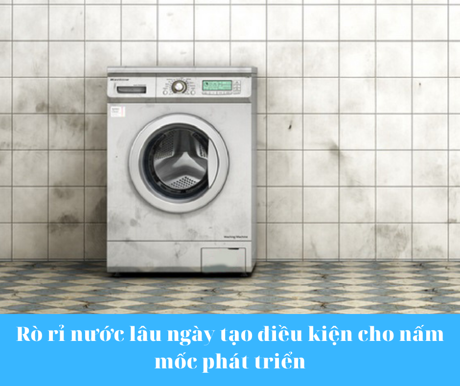

Thật là khó chịu khi một vũng nước lớn bị rò rỉ từ đáy máy giặt mỗi khi bạn giặt giũ quần áo. Máy giặt bị rò rỉ nước từ phía dưới là một vấn đề thường gặp. Có rất nhiều nguyên nhân có thể khiến máy giặt bị rò rỉ. Trong bài viết này, Hoàng Gia Điện Lạnh sẽ chia sẻ cùng các bạn nguyên nhân và hướng khắc phục sự cố chảy nước triệt để nhất .

I. Tuy rằng máy giặt bị chảy nước tương đối dễ sửa. Nhưng nếu bạn không sửa kịp thời sẽ xảy ra các tác hại sau:
1. Máy giặt bị chảy nước dưới gầm rất dễ bị dò điện ra vỏ, nguy hiểm cho người sử dụng
Máy giặt chảy nước dễ rò điện ra vỏ thùng giặt, nguy hiểm cho người dùng.
Khi máy giặt bị chảy nước, nước có thể sẽ bị lan ra hoặc tiếp xúc với các bộ phận có điện. Đặc biệt, vỏ máy giặt được thiết kế bằng kim loại, điện rò rỉ sẽ được truyền ra ngoài lớp vỏ, người dùng vô tình chạm phải sẽ gây ra tai nạn điện không mong muốn. Đây là tác hại nguy hiểm nhất và cần có biện pháp khắc phục ngay.
Mẹo vặt: Khi lắp máy giặt kỹ thuật viên phải nối tiếp địa cho vỏ máy giặt để đảm bảo an toàn cho người sử dụng, tránh bị điện giật nguy hiểm đến tính mạng.
2. Máy giặt bị chảy nước lâu ngày thì hậu quả dễ thấy nhất là chi phí tiền điện , tiền nước tăng cao.

Nước rò rỉ làm chi phí điện nước tăng cao
- .Tạo điều kiện cho ẩm mốc, mùi hôi, vi khuẩn sinh sôi nảy nở.

Tình trạng rò rỉ nước kéo dài sẽ làm cho khu vực nền phía dưới máy giặt trở nên ẩm ướt, có độ ẩm cao. Tạo điều kiện cho nấm mốc, vi khuẩn gây hại sinh sôi phát triển. Khu vực để máy lúc nào cũng bốc mùi khó chịu.Ảnh hưởng rất nhiều đến chất lượng cuộc sống gia đình bạn.
- . Dễ làm máy giặt nhanh hư hỏng.

Máy giặt bị mục chân đế
Nước chảy từ máy ra, đọng dưới chân đế máy giặt lâu ngày sẽ làm bị rỉ sét và mục chân đế. Khiến bạn phải tốn chi phí làm lại đồng vỏ thùng máy giặt
5. Sử dụng quá nhiều xà phòng bọt có thể trào vào boad mạch điều khiển gây chạm board mạch hoặc cháy board.
Nguyên nhân máy giặt bị chảy nước dưới gầm
Dựa trên nhiều năm kinh nghiệm sửa máy giặt của Hoàng Gia Điện Lạnh chúng tôi thì máy giặt bị chảy nước dưới gầm là một hiện tượng phổ biến mà máy giặt hay gặp phải.
II . Nguyên nhân dẫn đến hiện tượng này là:
- Ống thoát nước xả bị rách hoặc súc ra khởi máy giặt
- Ống cấp nước rách hoặc bị lỏng
- Gioăng cao su cửa máy giặt bị hở
- Vị trí máy giặt để không cân
- Do bị hở phớt bơm xả nước hoặc các ống cao su mềm trong máy giặt bị rách hoặc bị súc ra
- Do sử dụng bột giặt không phù hợp với loại máy giặt hoặc cho quá nhiều bột giặt
- Phao nước bị sai thông số hoặc lỗi bo mạch không ngắt khi đủ nước.
III. Hướng khắc phục lỗi máy giặt bị chảy nước.
Sau khi bạn xác định được nguyên nhân rỉ nước ở máy giặt thì trước khi tiến hành sửa chữa. Bạn cần rút phích điện máy giặt ra để đảm bảo an toàn điện. Các bước thực hiện như sau:
Kiểm tra ống nước xả
- Bạn cần kiểm ống nước xả đầu tiên. Vì ống nước xả bằng nhựa mềm, để ra ngoài nên rất có khả năng lâu ngày bị mục, rách, chuột cắn. Lỗ rách nhỏ bạn có thể lau khô ống và quấn băng keo dùng tạm. Nếu bị rách lớn thì thay ống nước mới khác.
- Hoặc đơn giản hơn có thể ống bị súc ra khi máy chạy rung lắc mạnh. Bạn cần siết chặt ống lại.
Sửa gioăng cao su ở cửa máy giặt bị hở
- Đối với máy giặt cửa ngang sử dụng trong thời gian dài có thể bị rách lớp gioăng cao su ở cửa giặt. Dẫn đến tình trạng máy giặt bị chảy nước dới gầm.
- Nếu bị rách nhỏ bạn có thể vá lỗ thủng hoặc tháo ra đảo ngược phần gioăng cao su bị thủng lên trên hoặc thay mới nếu bị rách quá to.
- Ngoài ra bản lề của cửa máy giặt bị vênh không ép sát gioăng cao su được cũng làm cho nước trong máy giặt chảy ra.
Kiểm tra khu vực ống cấp nước đầu vào máy giặt
- Bạn cần kiểm tra xem dây cấp nước máy giặt có bị rách không. Nếu rách buộc phải thay mới. Lưu ý khi mở dây cấp nước bạn phải khóa van nước lại. Nếu không thì khi tháo dây cấp, nước bị trào hết nước ra nhà.
- Nếu dây cấp nước bị lỏng chỗ xoáy vào máy giặt hoặc ống kết nối máy với nguồn nước từ bên ngoài bị lỏng thì bạn hãy vặn chặt lại.
Kiểm tra máy giặt có được đặt chỗ bằng phẳng không
- Máy giặt nếu đặt ở vị trí không bằng phẳng thì lồng giặt bị nghiêng đi so với phễu cấp nước. Khi nước chảy từ phễu ra bị lệch làm cho nước không chảy vào lồng mà chảy theo mép ngoài rớt xuống đáy làm cho máy bị chảy nước ra ngoài.
- Bạn cần phải kê lại chỗ bằng phẳng đảm bảo 4 chân chắc chắn. Hơn nữa nếu máy không được lắp chắc chắn thì khi vắt tốc độ cao dễ bị rung lắc mạnh gây hư hỏng máy giặt.
Kiểm tra xem bột giặt cho quá nhiều hoặc không phù hợp với máy giặt

Máy giặt bị trào bột giặt
- Nhiều người cho rằng bỏ nhiều bột giặt sẽ làm cho quần áo sạch hơn. Việc đó khiến cho máy có quá nhiều bọt sẽ trào ra ngoài, chảy xuống nền nhà.
- Ngoài ra dùng sai bột giặt cũng làm cho máy quá nhiều bọt. VD như dùng bột giặt tay cho vào máy giặt cửa ngang.
Kiểm tra phao và bo mạch điều khiển

Phao máy giặt
- Chức năng của phao là khi đủ nước sẽ báo về bo mạch biết để điều khiển ngừng cấp nước cho máy giặt. 1 trong 2 bộ phận này hỏng sẽ dẫn đến việc nước bị tràn ra ngoài.
Kiểm tra nơi xỳ nước phía bên trong máy giặt
- Có thể phớt bơm bị xỳ (đối với máy cửa ngang). hoặc phớt xả (đối với máy cửa trên) bị mòn hoặc rách
- Cần kiểm vỏ thùng máy giặt có bị thủng không. Các ống cao su, các ống ruột gà có thể bị lỏng hoặc rách do lồng giặt rung lắc cạ vào đáy máy giặt. Cũng có thể chuột chui vào cắn làm tràn nước ra ngoài.
Đối với những hướng khắc phục đơn giản , bạn có thể tự kiểm tra và xử lý.Riêng phần bo mạch hay những thiết bị bên trong máy giặt nếu bạn chưa thật rành rọt thì tốt nhất bạn nên liên hệ với đội ngũ sửa chữa máy giặt gần nhất để khắc phục nhanh nhất và tiết kiệm nhất cho bạn.
Hoàng Gia Điện Lạnh- Đội ngũ chuyên nghiệp sửa chữa máy giặt bị rò rỉ
Nếu bạn không phải là một kỹ thuật viên chuyên nghiệp, bạn có thể thiếu kỹ năng hoặc thiết bị để tự sửa máy giặt bị hỏng. Đó là lý do tại sao việc thuê các chuyên gia để được giúp đỡ sửa chữa là một sự đặt cược an toàn hơn cho tuổi thọ của các thiết bị của bạn và một khoản đầu tư hợp lý.
Khi tìm kiếm một đội ngũ kỹ thuật viên sửa chữa ở Đồng Nai và Bình Dương,bạn hãy tham khảo dịch vụ của Hoàng Gia Điện Lạnh -sự lựa chọn hàng đầu của bạn. Các kỹ thuật viên của chúng tôi giúp các gia chủ và doanh nghiệp trên toàn quốc khắc phục và sửa chữa các sự cố thường gặp của thiết bị điện.
Đây là lý do tại sao Hoàng Gia Điện Lạnh là đội bạn có thể tin tưởng:
- 10 năm kinh nghiệm trong việc sửa chữa rò rỉ máy giặt, các vấn đề về động cơ và các loại sửa chữa và bảo dưỡng khác.
- Hỗ trợ chủ nhà với các bộ phận máy giặt chất lượng cao từ các nhà sản xuất hàng đầu.
- Nhân viên hỗ trợ được đào tạo để trả lời các câu hỏi của bạn và cung cấp hỗ trợ 24/24.
- Chi phí sửa chữa hợp lý cho gia đình và doanh nghiệp .
- Các dịch vụ đa dạng - bạn có thể tin tưởng các kỹ thuật viên của Hoàng Gia Điện Lạnh sửa chữa mọi thứ từ Máy Giặt- Máy Lạnh – Máy quạt làm mát.Bạn có thể tin tưởng các kỹ thuật viên của chúng tôi có thể xử lý hầu hết các công việc bảo trì thiết bị mà không cần phải liên hệ với các nhóm khác nhau.
Chúng tôi mong muốn giúp bạn đạt được hiệu suất cao nhất của mọi thiết bị điện mà bạn sử dụng. Nếu bạn gặp sự cố về hiệu suất của thiết bị hoặc cần trợ giúp cài đặt thiết bị - hãy để lại tin nhắn cho chúng tôi hoặc gọi cho chúng tôi :
+84.918.092.848
CÔNG TY TNHH CƠ ĐIỆN LẠNH LỘC THIÊN PHÁT
Địa chỉ ( Địa chỉ) : 49 Lưu Chí Hiếu, P. Rạch Dừa, TP. Vũng Tàu
Mã số thuế ( Tax code) : 3603478401.
Điện thoại: ( Tel) : 0986 831 460
Website:sanpham


.png)


.png)